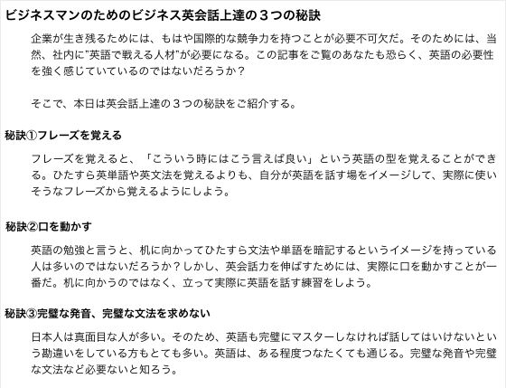
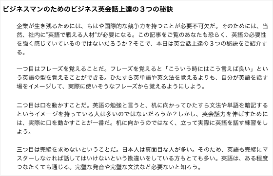

コンテンツマーケティングの方法と手順
コンテンツマーケティング手法のまとめ記事。
コンテンツ作成におけるフレームワークとしてご利用ください。
もくじ
記事作成の流れ
- 1, キーワードサーチの方法
- 2, デモグラフィック・キーワードの設定
- 3, ペルソナの作成
- 4, トップコピー：最大多数の興味を惹くパート
- 5, ボディコピー：読者の反応を決めるパート
- 6, ボトムコピー：求める行動を取ってもらうパート
文章作成のテンプレート
タイトルの付け方
記事公開前のチェック項目
バズを作る方法
新規サイト作成前に必読コンテンツ
アクセスアップの方法
心理テクニック
記事公開後のSEO順位推移
1, キーワードサーチの方法
※ターゲットキーワードが決まったら、ターゲットキーワードの類語調査すること。詳細：類語辞典を利用する方法。
①検索
・Googleブログ検索で検索して調べる
・はてなブックマークで検索して調べる
・Twitterサーチで検索して調べる②調査
そして、実際にコンテンツにアクセスし『最も広くソーシャルメディアでシェアされているものの上位３つ』を記録する。
最低限記録すべき事項は以下の通り。
・記事のタイトル
・URL
・いいね！数
・ツイート数
・はてなブックマーク数③需要
すると、それぞれのキーワードでどのようなコンテンツが求められているのかが手に取るように分かるようになる。そして、既存のコンテンツ以上に検索ユーザーに満足して貰える記事を提供すると、より多くのソーシャルシェアとナチュラルリンクを得て、検索エンジンで上位表示されるようになる。④SNS拡散の狙い方
「ソーシャルで大きくシェアされている記事があるキーワード」がおたからキーワードに当たる。
おたからキーワードを含んだ記事を公開する。
SEO対策｜検索順位の上位を独占するために私が行っている36の手順
2, デモグラフィック・キーワードの設定
以下が、バズ部の記事の例です。
対策キーワード：コンテンツマーケティング
性別：男性
年齢：３４歳
職種：外資系大企業のWEBマーケティング担当（ロジカルな会社）
所得：６００万円
世帯規模：既婚または離婚歴あり
学歴：早慶以上
住所：会社住所は青山
コンテンツマーケティング｜弊社が広告費ゼロで売上を劇的に上げた方法
なぜそのキーワードで検索しているのかを明確にすること。
対策するSEOキーワードを決めたら、そのキーワードで検索する人が、今、どのような状況にいて、何を求めて（ = ニーズ）サイトやページに辿り着くのかを知ることが必要だ。
例えば、「ニキビ 治し方」というキーワードがあるが、ニキビがあってもわざわざ治し方を調べようとしない人もいるし、「ニキビ 皮膚科」「ニキビ 漢方」など、別の類似キーワードで検索する人もいる。
その中で、なぜ「ニキビ 治し方」で検索しているのだろうか？例えば、「ニキビ 治し方」は、まだ症状が軽いため、すぐに改善できる治し方を求めているかもしれない。一方、「ニキビ 漢方」で検索する人は、今まで、色々なニキビ治療を試して来たが、何をやっても改善されないので、今度は漢方をためしてみようとしている人が検索しているのかもしれない。
また、「ニキビ 皮膚科」も、症状が重く、市販の薬では効果がなかったから、重度なニキビを改善する方法を求めて検索しているのかもしれない。このように、似たキーワードでも、ユーザーの状況も求めているコンテンツも全く違う。
ユーザーが本当に求めているコンテンツを深く理解するために、表面ニーズと潜在ニーズのを理解している必要がある。・表面ニーズ：検索ユーザーが求めている情報そのもの。
・潜在的ニーズ：その情報を知ることによって、そのユーザーが解決したいと思っている悩み、又は実現したいと思っている願望。例えば、「コンテンツマーケティング」で検索する人の表面的ニーズは、コンテンツマーケティングの方法や効果などを知ることだ。そして、潜在的ニーズは、PPCの効果や、検索エンジンからのアクセスがどんどん下がり、売上が落込みつつある現状を打破することだ。
つまり、コンテンツマーケティングというキーワードの場合は、このようになる。
・表面ニーズ = コンテンツマーケティングを知りたい
・潜在ニーズ = 従来の手法よりも、さらに売上を劇的に増やす方法を知りたい。
そして、表面ニーズを満足させるだけではなく、そこからさらに潜在ニーズを叶えられるようなコンテンツが、最も良質で、我々が目指すべきものだ。
3, ペルソナの作成
ペルソナ作成のフレームは以下のとおり。
・ペルソナの背景
・抱えている問題意識
・問題が解決できない理由
・その解決策を求めてサイトにたどり着いた
以下が、バズ部の記事のペルソナです。
商品力に自信があるし、今のやり方でうまくいってる会社に勤めていて、うまくいっている。
しかし、今のままのやり方で3年後はどうだろうと考えると、「まずいよなぁ」と思っている。そう思う根幹は、現 在のマーケティングに対する強い違和感。CMや交通広告、リスティングなどの広告手法を現在やっているが、実 際に、表面的な小手先のテクニックに終始していて、さらに広告費も湯水のように出て行く。まぁ、確かに今は売り上げに なっているが、潜在客をいらいらさせてしまったりネガティブな反応も多々ある状態。そういう現状を見て、「こんなんが本当にマーケティングなの?もっと潜在客からも感謝されて、しかも今まで以上に売り上げにつながるマーケティングがあるんじゃないか?」と毎日強く思っている。毎日、色々な情報を見て、参考にして、自分が試してみたことは、(テストなので規模の小さい成果だが)非常に高いものが出ている。
例えば、メルマガやDMに、自分が思うユーザーから感謝されるコンテンツを入れてみたりなど、コンテンツマーケ ティングに自分なりに取り組んでみたことがある。売上という結果にはさほど繋がらなかったが、今までに ない反応が返ってきた。
だから、自分の考えが正しいという認識が強烈にある。これを、会社でもチームを作って、もっともっと深めていきたいし、その確信もある。でも、時間的な問題やリソースの問題もあるから、上司や会社に提案して、それが採用されるほどの結果には、自分だけでは持っていけない現状がある。
そのため、これを会社でやろうとするための材料となる情報や実績を探している。「インバウンドマー ケティング」や「SEO」などの情報収集をしている中で、やっぱりコンテンツ・イズ・キングという確信はもっと強 くなっている。
だが、これを行うには、全社的な理解と協力体制、仕組みがなければ成果が出ない。さらに、自分自身も、本質的な意味では、まだまだコンテンツというものを分かっていない。今、コンテンツの本質も、テクニックも、成果に繋げるための道筋も、全て探している。そうやって、本物の会社を探している中で、今、たまたま「コンテンツマーケティング」というキーワードで調べて、バズ部に行き着いた。
ここまでペルソナを具体化すれば、ユーザーを120%満足させることができる。
コンテンツマーケティング｜弊社が広告費ゼロで売上を劇的に上げた方法
4, トップコピー：最大多数の興味を惹くパート
ターゲットに満足感を与えられる項目を箇条書きする。
また、一段落（フック文）は以下のフォーマットにそって作成する。
①問題提起：読者が抱えている悩みや問題を明確にする。
例えば、「お店に人が集まらなくて困っていますよね？」「どんなダイエットをやっても、失敗ばかりしていませんか？」など。そして、その理由は「間違った集客をやっているからですよ」「逆効果のダイエットをやっているからですよ」と伝える。ここで、読者が「そうそう、そうなんだよね?」という共感を得ることを意識しよう。②結果の明示：あなたの記事を読むとどうなるのかを具体的に伝える。
例えば、「ランディングページのコンバージョン率を○○%改善できます。」「３ヶ月で○○kgほどシェイプアップできます。」など。忙しい時間を割いてまで、記事を読む理由を与えてあげるイメージ。③結果の根拠：②で示した結果が出る根拠を伝える。
例えば、「実際に私は、これから紹介するダイエット方法で1ヶ月で5kg減りました。」「このトレーニング方法を半年間続けたら、マラソンを３時間以内で走れるようになりました。」など。ここでは説得力を高めるために数字が入っていることが望ましい。
たった1記事で8万人に読まれる文章を書けるようになるライティング術
コンテンツアウトラインの実例
ボディコピー：読者の反応を決めるパート
ボディパートは大きく分けて以下の２つのパーツに分かれる。
・小見出し
・本文
▼小見出し：流し読み読者の興味を惹き付ける
文中で小見出しを積極的に用いる第一の理由は、その方が読みやすいからだ。以下の２つを見比べてみて欲しい。■小見出しを効果的に使っているパターン
■小見出しを使わず文章のみで構成しているパターン
全く同じ文章だが、小見出しを効果的に使っている前者の方が読みやすいことに異論の余地はないだろう。また、タイトルと同じように魅力的な小見出しにすることによって、一つ一つの段落毎に、読者の興味をキープし続けることもできる。
従って、小見出しは第二のタイトル（キャッチコピー）と呼ぶことができる。
▼本文：読みやすい文章に共通するシンプルな３つの特徴
読みやすい本文には以下の３つの特徴がある。
簡潔：必要なことだけを最少の文字数で伝えていること。テーマと関係のない文章や余談が多いと、それだけで読者はページから離脱してしまう。
具体的：一つ一つ具体的に伝えていること。専門用語を乱発していたり、難解な表現のオンパレードで、理解するために努力が必要な文章だと、読者は途中で疲れてしまう。
リズム：文章一つ一つが短いこと（最大５行まで）長い文章がひたすら続いていると、読む気を減退させてしまう。文章を書き終えた後に、実際に声に出して読み、リズム感が良いかどうか確認しよう。
参考：基本文章術！説得力が一瞬で１０倍になる誰にでもできる文章の書き方
『⑤本文の書き方』は以下の3パターンから選んで書くこと。
次に以下の３つの形式の書き方のうちどの形式で書くかを決める。
▼リスト記事形式
あるトピックに沿ってポイントを箇条書き（リスト形式）で書く方法
どういうコンテンツを書くかを決めたら、以下の３つの形式の記事のうち、どの形式で書くかを決めます。この３つは、弊社で様々な書き方をためした結果、もっともソーシャルメディアでの拡散効率とSEO結果が良かったものです。
リスト記事は、ユーザーにとって内容を簡潔に理解しやすい形式のため、ソーシャルシェアが広まりやすいという利点があります。バズ部式では、このリスト記事形式を最も重要視しています。そのため、バズ部ブログの記事の8割はこれになっています。
ピクサーに学ぶ！人を魅了するストーリーライティングの２２のルール▼リンク記事形式
あるトピックに沿って参考になる記事のリンクを紹介する書き方
リンク記事は、ソーシャルでシェアされやすいことはもちろん、他サイトの運営者からも感謝されて良い関係を築くことができます。しかし、あくまでも他サイトを紹介する形なので、リンク記事ばかりで、自サイトにオリジナルコンテンツを用意しない場合は、サイトに権威性を作り上げることはできません。
WordPressカスタマイズの基礎が全て分かる初心者必読の記事10選▼画像記事形式
あるトピックに沿って画像を紹介する形式
画像記事は例のように、例えば新宿の人気カフェを分かりやすい画像を添えて紹介していく形式です。地域系キーワードや、ファッション系キーワードなど画像を使うことによって、よりユーザーニーズを満足させられる場合に特に有効です。
ボトムコピー：求める行動を取ってもらうパート
さて、ブログやサイトにおいて、読者に求める行動はシンプルに以下の３つだけだ。
・ソーシャルメディアでシェアしてもらう
・メールマガジンに登録してもらう
・資料請求や問い合わせをしてもらうボトムコピーパートは、
・まとめ&クロージング文章
・CTA（コール・トゥ・アクション）の２つに分かれる。一つずつご説明する。
▼まとめ：記事の満足度を上げスムーズにCTAに繋げる
まとめの目的は、最後に記事の内容を要約して伝えることにより満足度を上げた上で、スムーズにCTA（コール・トゥ・アクション）につなげることだ。
注意して欲しいのは、まとめの文章が長すぎると、その後のCTAへの誘導率を下げてしまうということだ。実際に、当ブログの計測データによると、まとめの文章は１５〜２０行以内に収まっている場合が、最もCTAのクリック率が高い。
まとめを簡潔に書き上げるためには、私が頻繁に使うテクニックは下記の３つだ。
箇条書き：ボディコピー本文の内容を箇条書き形式でまとめる。
結果の再提示：その記事に書いてあることを実践すれば、どのような結果を得られるのかを、最後にもう一度伝える。
両者のミックス：文字数に余裕がある場合は、両者を組み合わせる。▼CTA：反応率の向上
まとめの文章を書いたら、最後に必ず設置しておきたいのが、このCTA（コール・トゥ・アクション）だ。例えば、バズ部の場合は、CTAを以下の２つに設定している。・メールマガジンリストの獲得：将来的に新規顧客獲得につなげるため
・ソーシャルメディアの拡充：FacebookページのファンやTwitterのフォロワーになってもらい、自社メディアを拡大するためそして、光栄なことに高い反応率を得ることができている。そのために主に心がけていることは、以下の通りだ。
・欲求を刺激するキャッチコピーを用意する
・読者目線のコピーにする
・ベネフィットを伝える
・人の目線の動きに沿った導線デザインにする
・CTAのボタンやサイズ、配置を目立たせる
参考：ランディングページのコンバージョン率を5倍にする21の簡単な方法
【テンプレート】穴埋めすれば誰でも書ける魔法の文章テンプレート
1主張私は（＿＿＿＿＿＿）の（＿＿＿＿＿＿）について（＿＿＿＿＿＿）と考えます。
2根拠なぜなら（＿＿＿＿＿＿）だからです。
3定説一般に（＿＿＿＿＿＿）とされています。
4権威付け（＿＿＿＿＿＿）によれば（＿＿＿＿＿＿）とされています。
5具体例たとえば（＿＿＿＿＿＿）です。
6事例かつて（＿＿＿＿＿＿）ということがありました。
7比喩まるで（＿＿＿＿＿＿）のようなものです。
8疑問なるほど（たしかに）（＿＿＿＿＿＿）という面はあります。
9疑問へ
の反論しかし（＿＿＿＿＿＿）ではないでしょうか。
10主張の
繰り返しそれゆえ（＿＿＿＿＿＿）すべきなのです。
参考：文章の型稽古→穴埋めすれば誰でも書ける魔法の文章テンプレート 読書猿Classic: between / beyond readers
反応率の高いタイトルの2つの型を知る
文章において一番大事なのはタイトルだ。
なぜなら、８割の人はタイトルだけを見て、その記事を読み進めるかどうかを決めるからだ。
突然だが、次の２つのタイトルを見てみよう。①言葉遣いが間違えてないか不安ではないですか？
②あなたはこんな言葉遣いの間違いを犯していませんか？とても微妙な違いなので、一見、大したことないように思われるかもしれない。
しかし実際に、①と②を比べると、②の方が、高い反応を得られる。
なぜなら、前者は、「なんかお固い説教みたいな内容か、それとも、何かの売り込みなのかな？」と想像されてしまう。
一方、後者は、「自分も間違った言葉遣いをしているかもしれないからチェックしてみよう」と思わされる。
反応率の高いタイトルの2つの型
１．タイトルを「～して～する○○個の方法」とする
この形のタイトルは、ほぼ百発百中の効果があります。
人は、自分の生活を良くするための具体的な方法を求めているからです。
例えば、
・月々の支払いを半分にして、住宅ローンを組む７個の方法
・夢の一戸建てを、月々8万円の支払いで手に入れる21個の秘訣
・たった1回の会議で、業績を10倍に伸ばす3つの質問
などのタイトルは、興味がある人が見れば、必ず読みたくなります。２．好奇心をくすぐるタイトルにする
あまり１のタイトルばかり付けていると飽きられてしまいます。
そこで、この方法が効果的です。
例えば、
・たった一晩で360の英語フレーズを覚えた勉強法
・バカげたアイデア一つで、私は大金持ちになった
・ある粘土細工との出会いが、30分で私を変えてくれた
組み合わせて使うだけで高い成果を出すキャッチコピーの基本型３０選
» キャッチコピーの基本型３０
» 『読者を惹き付けるブログのタイトル』Cheat Sheetを作らされたｗ | POP*POP
» １０個の実例から学ぶ！読まれるブログ記事タイトルの６つのルール
【失敗例】全く売れないキャッチコピーに共通する５つの特徴と解決法
①ターゲットを極限まで絞っていない
STEP１：デモグラフィック変数の収集
最重要ターゲットとなりうる顧客に関して、最低限以下の５項目を調べよう。
年齢
性別
所得
職業
家族構成STEP２：サイコグラフィック変数の収集
次に上で調べたデモグラフィックデータをもとに、サイコグラフィック変数を分析していこう。サイコグラフィックとは、上記のデモグラフィックスを利用して消費者をより良く理解しようとする科学的メソッドだ。
そのためには、最低限、以下の２つを調べよう。
ライフスタイル
性格STEP３：ターゲットを一人の人間にまで落とし込む
最後に、STEP１とSTEP２で集めたデータをもとに、最も理想的な見込み客の顔を思い描けるようになるまで落とし込む。
例えば、
毎朝何時にどういう気分で起きて、どのような移動手段を使っていて、通勤/通学をしているか？
日中は、何をしていて、その時どのような気分になっているか？
夜、家に帰って、ホッとした時に出る一言は何か？
次の日に向けて、どのような気持ちで就寝しているか？
②顧客の根源的な痛みを理解していない
恐怖 – 人は希望では動かないが、恐怖を感じると必ず動く。例えば、お金がなくなり惨めな思いをするという恐怖から、経済的に成功したいと思う。人に見放されるという恐怖から、コミュニケーションがうまくなりたいと思う。
退屈 – 実は、私たちは誰もが、生きる目的のない、ハリのない毎日を恐れている。そのため、退屈な現状を変えて、刺激のある毎日を暮らしたいと思っている。無粋な話だが、熟年離婚の大きな原因の一つもこれにあるだろう。
無能 – 誰でも自分は才能に溢れた人間だと思いたがるものだ。逆に言うと、無能で誰の役にも立たない人間になることに激しい苦痛を感じる。そのため、人は誰でも、自己重要感/自尊心を常に得ていたいと思っている。
孤独 – 当たり前のことだが、人は一人になることを恐れる。他人との、心のふれあいや、つながりがなければ、誰だって生きていくことはできない。
失敗 – 人生の最期の時に、「自分の人生は失敗だった」と 言う方はとても多いらしい。つまり、多くの人が、自分が思い描いていた人生と全く逆の人生を歩んでいる。本心では、「こんなはずではない」と思いながら・・・
What：あなたの商品やサービスは上の５つの痛みの内どれを解消してくれるだろうか？
How：どのように、その痛みを解決してくれるだろうか？
When：いつ、その痛みを解決してくれるだろうか？
Where：どこで、その痛みを解決してくれるだろうか？
Why：なぜ、その痛みを解決してくれるのだろうか？
Who：誰が、その痛みを解決してくれるのだろうか？
③ベネフィットを伝えていない
顧客が求めているのは、商品の特徴ではない、その商品を得ることによって、手に入れることができる未来だ。
要注意？！全く売れないキャッチコピーに共通する５つの特徴と解決法
キャッチコピーの作り方：置き換え法
「ダイソンにしか見えないゴミがあります」
置き換え1「当店にしかだせないチョコレートの味があります」
置き換え2「赤ちゃんにしか感じられない空気汚れに気づいていますか？」
【公開前のチェック項目】コンテンツマーケティングにおいて重要視されること
1, この記事を読むとユーザーが解決できる問題を明確に伝えられているか？
2, ユーザーの問題を解決できる根拠をロジカルに伝えられているか？
3, 本文内でユーザーが求めている情報を妥協せずに伝えられているか？
4, ターゲットが思わず「自分のことだ！」と思うような問題提起になっているか？
5, 見出しを効果的に配置してユーザーにとって見やすい構成になっているか？
6, 読み直してみて分かりにくい箇所がないかチェックしたか？
7, ライバルサイトのコンテンツと比べて遥かに良いものになっているか？
参考：ブログを書く時に問うべき40の問い | SEO Japan
【番外編】ネットでうける11の要素
1. 話題にしたい部分があるもの、突っ込みどころがあるもの
2. 身近であるもの、B級感があるもの
3. 非常に意見が鋭いもの
4. テレビで一度紹介されているもの、テレビで人気があるもの
5. モラルを問うもの
6. 芸能人関係のもの
7. エロ
8. 美人
9. 時事性があるもの
10. 他人の不幸
11. 自分の人生と関係した政策、法改正などたとえば
櫻井翔さんが「しまむら」を完全に着こなしていると話題に – NAVER まとめ
櫻井翔さんが「しまむら」を完全に着こなしていると話題にのまとめ
私が作ったこの記事では
6. 芸能人関係のもの
2. 身近であるもの、B級感があるもの
9. 時事性があるもの
の４つに当てはまっていました。さらに
【拡散希望】居候男にボコられて軟禁されてる奴が助けを求めてる件について – NAVER まとめ
私が作ったこの記事では
１日でなんと１０万アクセス、1500ツイート以上を集めています（注目入りなし）
この記事では
9. 時事性があるもの
5. モラルを問うもの
に当てはまる上にTwitterで拡散されやすいようにタイトルに【拡散希望】などを付け加える工夫をしています。
リツイートされればされるほどネット上に拡散されていく仕組みが出来上がっています。
お気に入り詳細を見る
この人を助けたい→ネットで自分ができること→ツイート
この心理を巧みに活用したテクニックなのです。
【新規サイト作成前に必読】Webコンテンツ制作ガイド~売れるサイト作りに必要不可欠な5ステップ~
» Webコンテンツの制作ガイド~売れるサイト作りに必要不可欠な5ステップ~
■キーワード
コンテンツマーケティング
■検索数
1600
■仮タイトル
本当のコンテンツマーケティング：弊社が広告を一切使わずに毎月○○人の新規客や紹介客を獲得し続けている方法
■書き出し
きっと、あなたの会社は、PPC広告に頼った集客をしていることだろう。そしてPPC広告の単価が上昇している影響で利益率はどんどん下がってきているのではないだろうか。さらに、「今はまだいいが、このままでは３年後はどうなっているのだろう」と将来の売上に対する不安が日に日に募っていることだろう。一方、自社の話で恐縮だが、バズ部は、全くPPC広告を出すことがなく、毎月好きなだけ反響や問い合わせを得ることができている。
なぜか？
それは、バズ部がユーザーの役に立つ様々なコンテンツを公開し届けているからだ。このように、コンテンツによって、潜在顧客から認知され、しかるべきステップを経て購入してもらうまでの一連の流れを組み立てることをコンテンツマーケティングと言う。本日は、バズ部が行っているコンテンツマーケティングの結果や、実際に行っている具体的なノウハウをご紹介する。是非参考にしてほしい。
■本文
１．本質的なコンテンツを追求すれば従来のマーケティングの100倍成果が出る！
１−１．バズ部の数字の成果
- バズ部やクライアントのアナリティクス
- SEOの成果と、そのスピードを強調して見せる（一つの記事の集客力）
１−２．今、実績が出るようになった背景
- Googleの動き（humming bird）
- ソーシャルメディアの登場
- ユーザーのTリタラシーの向上
→ 1-2.の結論：３年前だと出来なかった。今がまさに旬。
２．コンテンツマーケティングの成否を分けるポイント
２−１．大半のコンテンツマーケティングが提供しているコンテンツはたったの５点
- 現状では、競合は少なすぎる
- ユーザーニーズの理解が浅すぎる。だから失敗する
２−２．コンテンツの質と量がカギ
- 「コンテンツを沢山作ればなんとかなる」は嘘！
- 「１ページでも何とかなる」は本当！
２−３．今までのマーケティングやSEOの常識はもう通用しない！
- それを出来るのは本当にユーザーのためになるビジネスだけ。
３．コンテンツマーケティングの全体像（メカニズム）
３−１．バズ部式コンテンツマーケティングと巷のコンテンツマーケティングの違い
- ユーザーニーズを徹底的に満足させるコンテンツ。
３−２．バズ部式コンテンツマーケティング全体像
- 図
- 使うツール
３−３．全てのコンテンツがユーザーニーズを満たすコンテンツ
- ブログ記事もコンテンツ
- CTAすらもコンテンツ
- リスト取得用のランディングページもコンテンツ
- その後のメルマガもコンテンツ
- 商品やサービスのオファーやプレゼンテーションもコンテンツ
→ これがうちの理念。これをやるから、ユーザーがついてくるし、売上も着いてくると信じてやっている。だから、弊社は創業して１年ちょっとの会社だが、大企業と沢山契約することができている。
４．バズ部がコンテンツを作るために何をやっているのか？
４−０．最初にコンテンツマーケティング全体のターゲット（ゴール）を決める
- クライアントA社の場合の例
- その断片の記事のキーワードを見つけていく。
- まずは、最も理想的な読者に対して、その人に伝わるコンテンツを書く
４−１．ブログの記事コンテンツの作り方
- キーワードリサーチ（いますぐ、そのうち、おなやみ、まだまだ）
- キーワードをもとにユーザーニーズを深める
・デモグラフィックを仮定する（最も理想的な読者像）
・ペルソナ
・テクニック：深い人が理解できるコンテンツを書く（なぜ？）
- コンテンツを書いたらソーシャルでのリリースする → SEOであがってくる
４−２．無料プレゼントコンテンツの作り方
- キーワードはあくまでも断片（もっと大きな視点でのニーズ把握が必要）
- 実地調査
４−３．リスト取得LPとCTAの作り方
（いますぐ、おなやみ、そのうち、まだまだ）は成熟市場か未成熟市場でだいぶ違う
４−４．メルマガコンテンツの作り方
- ステップメール
- 定期メルマガ
４−５．オファー用のLPの作り方
５．まとめ
■結論
コンテンツマーケティングとは、ユーザーに対して提供しうる最大の価値を届けるということ
2014年版ブログにトラフィックを集める7つの方法
» 2014年版ブログにトラフィックを集める7つの方法 | Flips Blog Web担の小技
売れるセールスコピーを短時間で書き上げる方法
» 売れるセールスコピーを短時間で書き上げる方法 | オクゴエ！
類語辞典を利用する方法
ターゲットキーワードの類語を挿入することで検索順位を上げることができます。
weblioの類語辞典を使って、記事内には関連キーワードを散りばめましょう。
» 類語辞典・シソーラス・対義語 – Weblio辞書
以上。
photo credit: giulia.forsythe via photopin cc
P.S：普段の僕は「Twitter」を軸に発信しています。また最近は「Webマーケ教材」の作成に注力しており、ネットで稼ぐスキルを学べます。ブログの更新通知は「メルマガ」から送っています。スパムは送りません。更新通知だけ送ります。